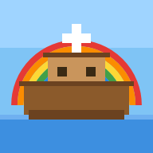

Faith Craft Math
A free block-building Bible adventure that practices math skills, from Pre-K through Grade 8.
▶ Play now- Free
- No account
- No ads or chat
- No data collection
- Works offline after the first load
- Made for iPad
What it does
- Help Noah, Nehemiah, Joseph, and other Bible heroes by solving math in each mission.
- Each player gets their own profile. A short starting-spot quiz picks a level for each kind of math (numbers, adding and subtracting, multiplying and dividing, fractions and decimals, measurement, and shapes), or a grown-up can pick a level.
- Problems are read aloud. Pre-readers get picture problems and big buttons.
- Optional school order: new topics follow the order of the Montgomery County Public Schools (MCPS) math units for the child's grade, plus review and a peek at what's next.
- A report card for grown-ups, behind a parent PIN.
Add it to your iPad Home Screen
- Open this page in Safari and tap Play now.
- Tap the Share button (the square with an arrow pointing up).
- Scroll down and tap Add to Home Screen, then tap Add.
- Open FC Math from the Home Screen once while online. After that it works offline.
Privacy
Progress is saved only on the device. Nothing is sent anywhere. There are no accounts, ads, chat, or tracking.
Faith Craft Math practices math skills. Not a medical or therapy product. The starting-spot quiz is a quick estimate, not a formal assessment. It isn't made by or endorsed by MCPS or any curriculum publisher; it follows only the published order of unit topics. Bible text: World English Bible (British Edition), public domain. Fonts: Lexend and OpenDyslexic (SIL Open Font License). 3D engine: three.js (MIT).